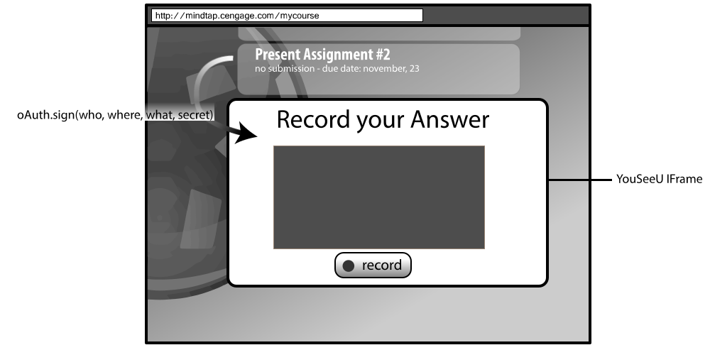
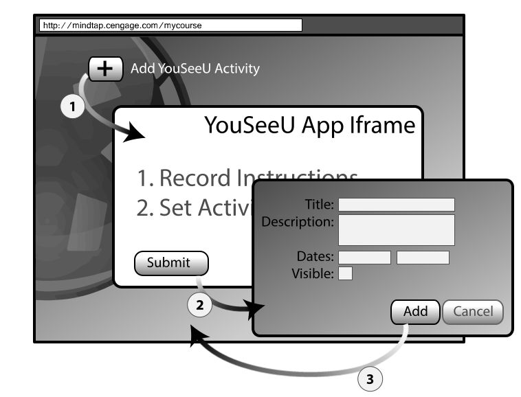
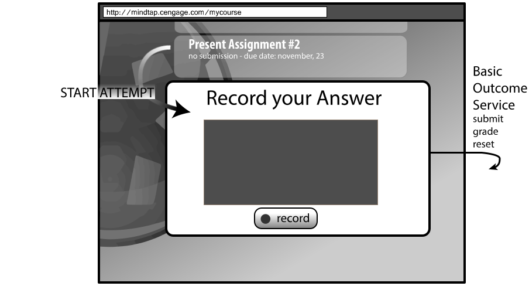

Using LTI to provide deep integration of YouSeeU Video Assessment in MindTap.
- What worked
- What was missed
Claude Vervoort / Architect, MindTap team
synchronous (live capture) and asynchronous speech video delivery, recording and grading
Courseware platform assembling rich content and activities in a customizable environment.
MindApps are used to actually deliver Content and Activities.
Demo!
Standards at Play
Rating on how LTI played out for main integration points:
- Launching an Assessment
- Adding/Editing an Activity
- Submission and Grading
- Master and Courses
- Roster
Launching an Assessment
When clicking on the Learning Path, the right assessment opens in the right state for current user.
Basic LTI Launch

POST http://youseeu.com/lti
lti_message_type: basic-lti-launch-request
#where
context_id: 46
context_title: 'Course Name'
#who
user_id: 1234455
roles: 'Instructor'
lis_person_name_family: 'Smith'
lis_person_name_given: 'Samantha'
#what
custom_ref_id: 'asst-345'
#trust
oauth_consumer_key: 'mindtap'
oauth_sign: '6mzAT1/8K9y3Bu2co417WT2g0Dc='
Verdict
Adding an Activity
As an editor or an Instructor, I want an integrated authoring environment to add or edit YouSeeU activities in MindTap.
Content Item Request Launch
1: Content Item Request
POST http://youseeu.com/lti
lti_message_type: ContentItemSelectionRequest
#where
context_id: 46
context_title: 'Course Name'
#who
user_id: 1234455
roles: 'Instructor'
#flow continutation
content_item_return_url: http://mindtap.com/nb/service/lti/contentItemSelectionReturn
data: mindtap-continutation-data
#trust
oauth_consumer_key: 'mindtap'
oauth_sign: '6mzAT1/8K9y3Bu2co417WT2g0Dc='
2: YouSeeU responds
POST http://mindtap.com/nb/service/lti/contentItemSelectionReturn
content-items: {
"@context": ["http://purl.imsglobal.org/ctx/lti/v1/ContentItemPlacement",
"http://mindtap.cengage.com/static/nb/jsonld/contentitem.jsonld"],
"@graph": [{
"@type": "ContentItemPlacement",
"placementOf": {
"@type": "LtiLink",
"mediaType": "application/vnd.ims.lti.v1.launch+json",
"title": "Subjective Assessment",
"activityRefId": "12ad5g",
"mtScorable": {
"pointsPossible": 34.53
}
}
}]
}
data: mindtap-continutation-data
3: Instructor submits
...or cancel
Limitations
- No confirmation when truly added
- No grading information
- No Edit flow
Content Item: more than LTI Links
- Also for embedding (Rich Text Editor)
- Images, video, HTML snippets, IFrames
- Draft Specifications
Verdict
Submission and Grading
As an Student, I need to know in MindTap the status of my activity, in progress, submitted, graded.
Basic Outcome Service (the POXes)

POST http://youseeu.com/lti
lti_message_type: basic-lti-launch-request
#who, where, what, trust as before
#Outcome
lis_outcome_service_url: http://local.mindtap/nb/service/ltiOutcome/saveAttempt/
lis_result_sourcedid: '3e39d9bd-77df-4cb4-8070-07ca76c75c52'
States Mapping
- In Progress: on 1st launch (attempt created)
- Submitted: POX ReplaceResult, empty Result
- Graded: POX ReplaceResult, 0-1 grade rescaled
- Reset: POX DeleteResult